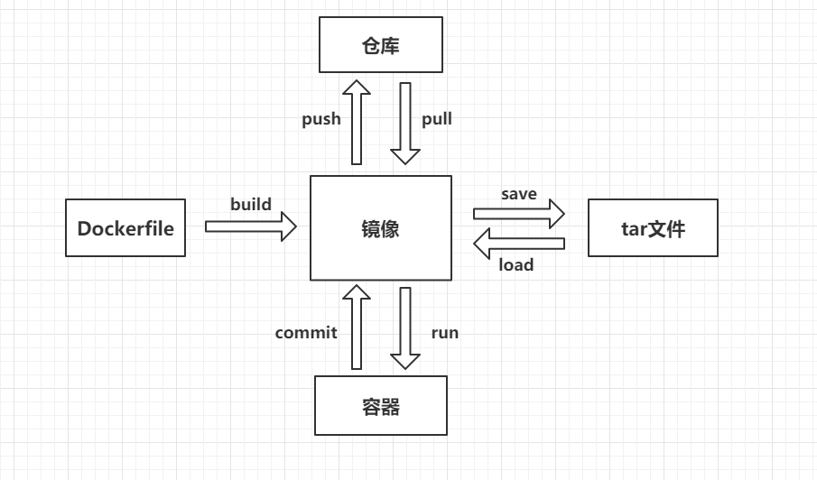

Docker
Docker概念

Docker配置Mysql
1. docker pull mysql:latest #拉取最新版mysql
2. docker images #查看镜像文件
3. docker run -p 3306:3306 --name along_mysql -e MYSQL_ROOT_PASSWORD=123456 -d mysql #启动mysql服务并映射端口号为3306,启动name为along_mysql,设置初始密码为123456
4. docker ps -a #查看启动的服务,如果上一步报错,有可能是关闭了docker容器但是还未退出,STATUS为Exited
如果发现有关闭了容器但是还未退出的容器,使用 docker rm <CONTAINER_ID> 删除
--批量删除 docker container prune
--批量删除 docker ps -a | sed '/^CONTAINER/d' | grep "Exited" | gawk '{cmd="docker rm "$1; system(cmd)}'
5. 不建议直接进入docker容器内部修改内容,如果需要修改密码/CURD数据,使用宿主机/外部访问宿主机ip:3306端口操作!!!
##宿主机/外部访问docker启动的mysql服务
1. 宿主机上安装mysql
yum install mysql-community-server
service mysqld start #停止service mysqld stop
service mysqld status #查看状态
#如果centos上安装mariadbs数据库 删除yum remove mariadb*
2. 停止docker上的mysql服务 docker stop mysql / docker rm <CONTAINER_ID>
#因为宿主机上启动mysql服务也是用3306端口,如果不中断docker的mysql服务,宿主机上无法启动mysql并报错
3. 宿主机上登陆mysql
cat /var/log/mysqld.log | grep password --获取安装时的用户密码,假设为-dz%-KLw0fe
mysql -uroot -p --> -dz%-KLw0fe
ALTER USER "root"@"localhost" IDENTIFIED BY "123456"; #修改密码
#mysql8.*+在修改密码时会报错 "Your password does not satisfy the current policy requirements"
ALTER USER "root"@"localhost" IDENTIFIED BY "Root_123456";
先修改为指定强度的密码,然后修改密码强度
set global validate_password.policy=0;
set global validate_password.length=1;
ALTER USER "root"@"localhost" IDENTIFIED BY "123456"; #修改为简单密码
4. 宿主机上mysql服务中断, service mysqld stop, 启动docker上mysql服务
5. 设置外部访问,如不设置,脱离虚拟机使用其他工具如Navicat/Mysql-Front连接会报错"1251-client does not support authentication protocol requested by server"
宿主机连接docker服务 mysql -h192.168.112.131 -uroot -p123456 #192.168.112.131为你当前虚拟机的IP地址 使用ifconfig查看到inet
select host,user,plugin,authentication_string from mysql.user; #查看用户信息
update user set host = '%' where user ='root'; #host不设限,都可访问
flush privileges;
ALTER USER 'root'@'%' IDENTIFIED WITH mysql_native_password BY '123456'
6. 使用Navicat 连接 192.168.112.131 root 123456
Docker部署mindoc(wiki)
1. docker pull registry.cn-hangzhou.aliyuncs.com/mindoc/mindoc:v0.12 #使用阿里云拉取mindoc docker镜像
2. mysql -h192.168.112.131 -uroot -p123456 #创建wiki所需数据库
(mysql)>CREATE DATABASE mindoc_db
3. docker run -p 8181:8181 -e MYSQL_PORT_3306_TCP_ADDR=192.168.112.131 -e MYSQL_PORT_3306_TCP_PORT=3306 -e MYSQL_INSTANCE_NAME=mindoc_db -e MYSQL_USERNAME=root -e MYSQL_PASSWORD=123456 -e httpport=8181 -d registry.cn-hangzhou.aliyuncs.com/mindoc/mindoc:v0.12
#启动mindoc
DB_ADAPTER 制定 DB
MYSQL_PORT_3306_TCP_ADDR MySQL地址
MYSQL_PORT_3306_TCP_PORT MySQL端口号
MYSQL_INSTANCE_NAME MySQL数据库名称
MYSQL_USERNAME MySQL账号
MYSQL_PASSWORD MySQL密码
HTTP_PORT 程序监听的端口号
4. 访问 192.168.112.131:8181